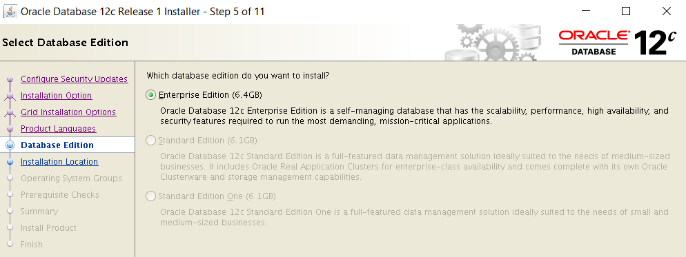
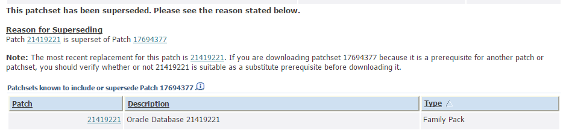
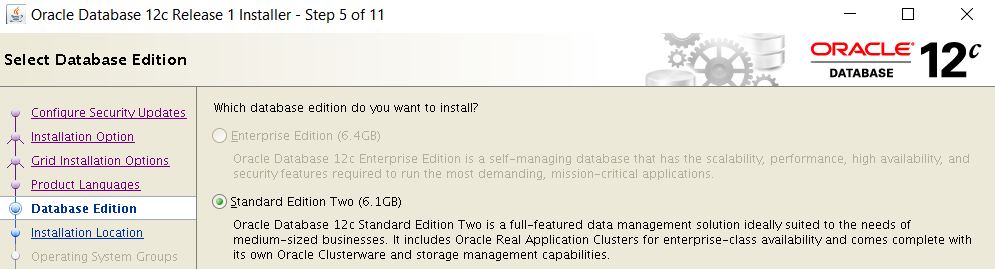

This was first published on https://www.dbi-services.com/blog/which-patchset-for-12-1-0-2/ (2016-05-24)
Republishing here for new followers. The content is related to the versions available at the publication date.
.
When you want to download the latest patchset of the latest release, 12.1.0.2, you can find two patchsets referenced: 17694377 and 21419221.
The short answer is: download p21419221 and add latest PSU and bundle patch.
Here is the kind of question that can be raised:
https://twitter.com/MarisElsins/status/731414231531323393
And of course, the question is answered by Mike Dietrich.
We were used to have only one binary to download and choose the edition during installation. However, when first patchset of 12cR1 was released the Standard Edition and Standard Edition One was grayed. Those binaries can be used to install only the Enterprise Edition: 
At that time, July 2014, we did not know why, and many doubts and guesses came about the future of Standard Edition. Actually, the goal was to add forced instance caging to Standard Edition, but that was not yet implemented in the binaries.
This patchset was distributed as p17694377 which is now classified as superseeded: 
The files for the installation of Oracle Database are: p17694377_121020_platform_1of8.zip and p17694377_121020_platform_2of8.zip
In August 2015 we learned about Standard Edition 2, with its instance caging to 16 user threads, and then came the binaries for it, released as p21419221. This patchset provides the binaries to install the Standard Edition 2 of Oracle Database as: p21419221_121020_platform_3of10.zip and p21419221_121020_platform_4of10.zip
This files are only for Standard Edition 2 as the other choice is grayed: 
However, Enterprise Edition is still available because all others files in this patchset 21419221 are the same as in the 17694377 so the installation of the Enterprise Edition of Oracle Database is possible with: p21419221_121020_platform_1of10.zip and p21419221_121020_platform_2of10.zip
You may see different size and different checksum and I don’t know why, but all files are exactly the same except that 21419221 has two additional files.
For this reason, the p17694377 is marked as superseeded by p21419221 and you don’t have to download p17694377 in any case.
Don’t worry about MOS note 730365.1 where 17694377 is referenced in 10.2.0.x to 12.1.0.2.0 sections but 21419221 is referenced for 11.2.0.x.x to 12.1.0.2.0, Those notes may not be up to date. Just follow the ‘superseeded by’ links to go to the latest.
You can find the same binaries in OTN downloads: http://www.oracle.com/technetwork/database/enterprise-edition/downloads/index.html and event if you can see ‘enterprise-edition’ in the URL you have both editions there.
After a patchset is released, important bugs are fixed. Don’t forget to download the latest PSU and proactive bundle patch: https://support.oracle.com/epmos/faces/DocContentDisplay?id=1454618.1#aref_section24
Of course, this blog post will be obsolete as of the general availability of the Next Generation of Oracle Database, Who-Must-Not-Be-Named, but whose name we can guess from book titles about it.
{kind=link}
{kind=link}
{kind=link}